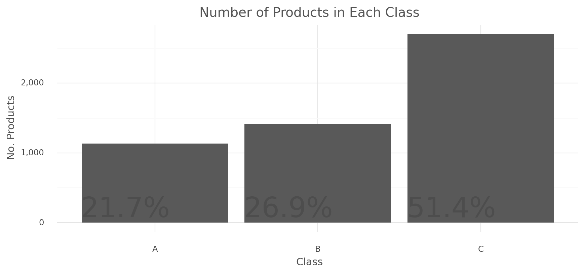
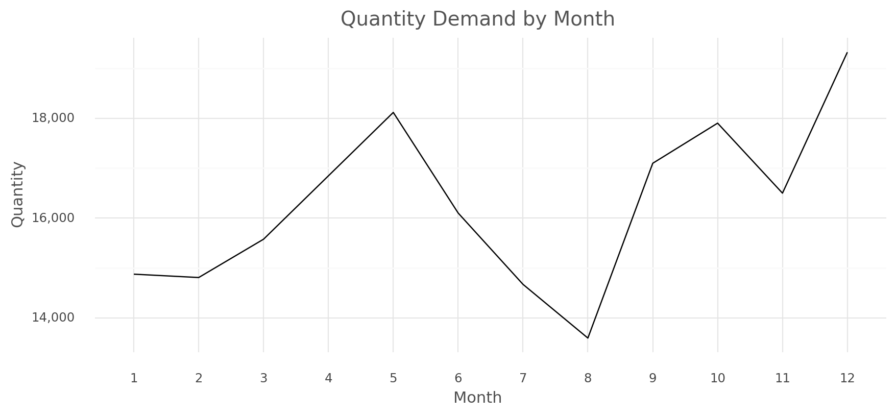
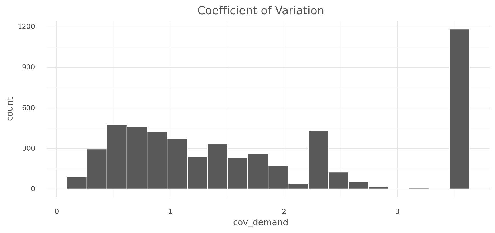

import pandas as pd
import numpy as np
import plotnine as g
from datetime import timedeltaEffective inventory management is essential in maintaining optimal levels of inventory which ensures that the right items are always available when needed while reducing the cost of holding inventory and ultimately avoiding stockouts or excess inventory.
Inventory classification using the ABC-XYZ analysis is a widely used technique which categorizes items based on their sales volume and demand variability, allowing businesses to have better control over thier inventories and to also use optimal strategies on items that are most important to their business. We will utilize the powerful framework of ABC-XYZ inventory classification model to analyze transaction data for products. By performing this analysis, we will be able to extract valuable insights and identify trends that can help inform strategic decisions around inventory management.
Load the packages
For this project the two major package we will use is the pandas package for data summarization and reshaping and plotnine for data visualization based on the grammer of graphics.
Code
def custom_theme(figure_size=(10, 4)):
return (
g.theme_minimal() +
g.theme(figure_size=figure_size,
plot_background=g.element_rect(fill="#FFFFFF", color="#FFFFFF"),
panel_background=g.element_rect(fill="#FFFFFF"),
plot_title=g.element_text(color="#545454", size=14),
axis_title=g.element_text(color="#4F4F4F", size=11),
axis_text=g.element_text(color="#474747"))
)Import transaction data
path = "https://raw.githubusercontent.com/akins11/SCM/main/posts/abc-xyz-analysis/data/scanner_data.csv"
df = pd.read_csv(path)
df.head()| Unnamed: 0 | Date | Customer_ID | Transaction_ID | SKU_Category | SKU | Quantity | Sales_Amount | |
|---|---|---|---|---|---|---|---|---|
| 0 | 1 | 2017-01-02 | 2547 | 1 | X52 | 0EM7L | 1.0 | 3.13 |
| 1 | 2 | 2017-01-02 | 822 | 2 | 2ML | 68BRQ | 1.0 | 5.46 |
| 2 | 3 | 2017-01-02 | 3686 | 3 | 0H2 | CZUZX | 1.0 | 6.35 |
| 3 | 4 | 2017-01-02 | 3719 | 4 | 0H2 | 549KK | 1.0 | 5.59 |
| 4 | 5 | 2017-01-02 | 9200 | 5 | 0H2 | K8EHH | 1.0 | 6.88 |
Quick data inspection
This inspection is to help us identify any issue pertaining to the overall data.
Data struture
df.info()<class 'pandas.core.frame.DataFrame'>
RangeIndex: 131706 entries, 0 to 131705
Data columns (total 8 columns):
# Column Non-Null Count Dtype
--- ------ -------------- -----
0 Unnamed: 0 131706 non-null int64
1 Date 131706 non-null object
2 Customer_ID 131706 non-null int64
3 Transaction_ID 131706 non-null int64
4 SKU_Category 131706 non-null object
5 SKU 131706 non-null object
6 Quantity 131706 non-null float64
7 Sales_Amount 131706 non-null float64
dtypes: float64(2), int64(3), object(3)
memory usage: 8.0+ MBThere are 131,706 rows and 6 columns in total. The Date variable have an object data type instead of datetime data type, also we will drop the Unnamed: 0 column which is not useful for this analysis.
SKU summary
Product SKU which stands for stock keeping unit is a unique identifier code assigned to each item in a company’s inventory and they are used to identify, track and manage inventories. We can check the total number of unique SKU by using the nunique() method from pandas DataFrame.
print(f"There are {df['SKU'].nunique() :,} unique SKUs.")There are 5,242 unique SKUs.Quantity & sales summary
A descriptive summary of Quantity which is the amount of a particular product customers are willing to purchase, and it appears that majority of the orders placed are for a single unit we can also see a major outlier of 400 representing the highest order.
df[["Quantity", "Sales_Amount"]].describe()| Quantity | Sales_Amount | |
|---|---|---|
| count | 131706.000000 | 131706.000000 |
| mean | 1.485311 | 11.981524 |
| std | 3.872667 | 19.359699 |
| min | 0.010000 | 0.020000 |
| 25% | 1.000000 | 4.230000 |
| 50% | 1.000000 | 6.920000 |
| 75% | 1.000000 | 12.330000 |
| max | 400.000000 | 707.730000 |
Data cleaning
We will perform some data cleaning such as:
Remove
Unnamed: 0andSKU_Categorycolumns which are not useful for this analysis.
Changing the
Datevariable to a datetime data type using the pandasto_datetime()function.
And finally convert all column names to lower case.
df = (
df
.drop(["Unnamed: 0", "SKU_Category"], axis=1)
.assign(Date = lambda d: pd.to_datetime(d["Date"]))
)
df.columns = df.columns.str.lower()
df.head()| date | customer_id | transaction_id | sku | quantity | sales_amount | |
|---|---|---|---|---|---|---|
| 0 | 2017-01-02 | 2547 | 1 | 0EM7L | 1.0 | 3.13 |
| 1 | 2017-01-02 | 822 | 2 | 68BRQ | 1.0 | 5.46 |
| 2 | 2017-01-02 | 3686 | 3 | CZUZX | 1.0 | 6.35 |
| 3 | 2017-01-02 | 3719 | 4 | 549KK | 1.0 | 5.59 |
| 4 | 2017-01-02 | 9200 | 5 | K8EHH | 1.0 | 6.88 |
Product orders for a 12-month period
To accurately determine the demand and variability for each product, we will use a 12-month period which provides sufficient amount of data for the analysis and also a representative sample of the patterns and trends of demand over time. To do this we will filter orders made in 2017 alone.
df_m = (
df
.query("date >= '2017-01-01' & date <= '2017-12-31'")
.assign(month = lambda d: d["date"].dt.month)
)ABC inventory classification
ABC inventory classification helps business group items based on demand, cost, revenue and the overall relative importance of the item to the business. It helps them realize which of their products or services have the most significant impact on their financial success.
It categories items into three separate classes where:
Items in
class Aare considared to have high demand volume and revenue, majorly80%overall.
Items in
class Bhave slightly moderate demand volume and revenue, considared to be15%of the overall total.
Items in
class Chave reletively low demand volume and revenue.
To group each product, we will perform the following operations:
Group the transaction data by SKU and extract the number of times each product was purchased, the total demand for the product and the sum of all sales amount.
The resulting data from the previous step will be arranged from the highest revenue to the lowest revenue (e.i in descending order).
abc_df = (
df_m
.groupby("sku")
.agg(unique_purchases = ("sku", "nunique"),
total_demand = ("quantity", "sum"),
total_revenue = ("sales_amount", "sum"))
.sort_values(by="total_revenue", ascending=False)
.reset_index()
)
abc_df.head()| sku | unique_purchases | total_demand | total_revenue | |
|---|---|---|---|---|
| 0 | 3YDVF | 1 | 926.0 | 29419.35 |
| 1 | LJ26I | 1 | 632.0 | 13571.45 |
| 2 | IRQZ4 | 1 | 321.0 | 11681.63 |
| 3 | DWJC4 | 1 | 823.0 | 10592.09 |
| 4 | 44RUE | 1 | 218.0 | 8942.63 |
Get the cumulative sum of total revenue which determine the relative contribution of each product to the total revenue generated from all products.
Products that belong to the
A classare those that accounted for80%of the revenue generated.Class Bproducts are those that fall between the top 80% and the next15%of revenue generated.While products in
class Care those that fall withing the remaining5%of revenue generated.
Code
def classify_abc_item(cum_percent):
"""
Assign (ABC) classification to each product based on the their percentage of
revenue contribution.
:param cum_percent: The running percentage of revenue contributed.
:return: A pandas Series with three unique category.
"""
if cum_percent <= 80:
return 'A'
elif cum_percent > 80 and cum_percent <= 95:
return 'B'
else:
return 'C'abc_df = abc_df.assign(
# running total of revenue.
revenue_cumsum = lambda d: d["total_revenue"].cumsum(),
# the percentage of total revenue.
revenue_running_percent = lambda d: (d["revenue_cumsum"] / d["total_revenue"].sum()) * 100,
# aasign each product a class.
abc_class = lambda d: d["revenue_running_percent"].apply(classify_abc_item),
# simple rank to each product based on the its percentage of revenue generated.
rank = lambda d: d["revenue_running_percent"].rank().astype(int)
)
abc_df.head()| sku | unique_purchases | total_demand | total_revenue | revenue_cumsum | revenue_running_percent | abc_class | rank | |
|---|---|---|---|---|---|---|---|---|
| 0 | 3YDVF | 1 | 926.0 | 29419.35 | 29419.35 | 1.866325 | A | 1 |
| 1 | LJ26I | 1 | 632.0 | 13571.45 | 42990.80 | 2.727279 | A | 2 |
| 2 | IRQZ4 | 1 | 321.0 | 11681.63 | 54672.43 | 3.468347 | A | 3 |
| 3 | DWJC4 | 1 | 823.0 | 10592.09 | 65264.52 | 4.140295 | A | 4 |
| 4 | 44RUE | 1 | 218.0 | 8942.63 | 74207.15 | 4.707603 | A | 5 |
Summary
temp = (
abc_df
.groupby("abc_class")
.agg(total_products = ('sku', 'nunique'),
total_demand = ('total_demand', "sum"),
total_revenue = ('total_revenue', "sum"))
.reset_index()
)Code
def abc_plot(var: str, y_title: str, title: str):
return (
g.ggplot(data=temp.assign(prop = lambda d: (d[var] / d[var].sum())*100),
mapping=g.aes(x="abc_class", y=var)) +
g.geom_col() +
g.geom_text(g.aes(label="prop", y=0),
position=g.position_dodge(width=.9),
nudge_x=-0.18,
size=30, color="#4D4D4D",
va="bottom",
format_string="{:.1f}%") +
g.scale_y_continuous(labels = lambda l: ["{:,.0f}".format(v) for v in l]) +
g.labs(x="Class", y=y_title, title=title) +
custom_theme()
)Number of Products
abc_plot(var="total_products",
y_title="No. Products",
title="Number of Products in Each Class")
A large number of products, e.i about 51.4% fall within the class C boundary which have the lowest demand and revenue generated while 21.7% of all products falls within the top 80% generating the highest revenue.
Product Demand
abc_plot(var="total_demand",
y_title="Qty. Demand",
title="Total Quantity Demand by (ABC) Class")Product classification summary by the quantity show how much of products in class A where in demand. There are no suprises here given that these products generate more revenue. For class C products, despite comprising of 51.4% of all products, they only have 9.9% of the total order quantity.
Revenue
(
g.ggplot(data=temp, mapping=g.aes(x="abc_class", y="total_revenue")) +
g.geom_col() +
g.scale_y_continuous(labels = lambda l: ["{:,.0f}".format(v) for v in l]) +
g.labs(x="Class", y="Revenue", title="Total Revenue by (ABC) Class") +
custom_theme()
)A visual representation of the 80/15/5 split of the total revenue generated and as expected all products generating more demand and revenue are in the class A category. It is important for inventory managers to create an optimize inventory level for such product to meet demand, they should also prioritize supplier relationship to ensure adequate access to such products, and lastly there should be a huge focus on quality as anything less than that can lead to decrease in demand and eventually low revenue.
XYZ inventory classification
The major aspect of ABC analysis is it focus on valuable items based on their demand and revenue with less emphasis on other factors such as demand variability and sessionality. This gap can be bridged using the XYZ inventory classification which categorize products according to their level of demand variability.
There are three categories in XYZ analysis which are:
Class X: These are items with low demand variability, they are less challenging to manage because of their predictable demand patterns.
Class Y: Items in this class have a moderate demand variability, but they are not easy to manage unlike items in class X, but they have better predictable patterns than items in class Z.
Class Z: There are high demand variability in items that falls within this category, and demand for product are less stable and predictable.
(
g.ggplot(data=df_m.groupby("month")["quantity"].sum().reset_index(),
mapping=g.aes(x="factor(month)", y="quantity", group=1)) +
g.geom_line() +
g.scale_y_continuous(labels = lambda l: ["{:,.0f}".format(v) for v in l]) +
g.labs(x="Month", y="Quantity", title="Quantity Demand by Month") +
custom_theme()
)
A rundown of the seasonality in the data indicate that the total customer order by month have huge variablility across the year with its lowest point in August while its peaked in December. It is crucial to note that there was a surge in order from March to May followed by an abrupt decline in order from June to August.
(
g.ggplot(data=df_m.groupby("month")["sales_amount"].sum().reset_index(),
mapping=g.aes(x="factor(month)", y="sales_amount", group=1)) +
g.geom_line() +
g.scale_y_continuous(labels = lambda l: ["{:,.0f}".format(v) for v in l]) +
g.labs(x="Month", y="Revenue", title="Total Revenue in Each Month") +
custom_theme()
)Although there are similar seasonal pattern between the total quantity order and revenue, the upword trend in revenue appear to have began in January all the way through to May, before the expected drop in revenue similar to the quantity order.
To draw out the XYZ class, we must first reshape the data and make each row represent a single SKU and the 12 months spread across different columns with values of the total quantity demand for a particular SKU.
xyz_df = (
df_m
.groupby(["sku", "month"])["quantity"]
.sum()
.reset_index()
.pivot(index="sku", columns="month", values="quantity")
.fillna(0)
.add_prefix("M")
.reset_index()
.rename(index={"month": "index"})
)
xyz_df.columns.name = ""
xyz_df.head()| sku | M1 | M2 | M3 | M4 | M5 | M6 | M7 | M8 | M9 | M10 | M11 | M12 | |
|---|---|---|---|---|---|---|---|---|---|---|---|---|---|
| 0 | 00GVC | 1.0 | 0.0 | 0.0 | 0.0 | 0.0 | 1.0 | 0.0 | 0.0 | 0.0 | 0.0 | 0.0 | 0.0 |
| 1 | 00OK1 | 0.0 | 0.0 | 1.0 | 7.0 | 2.0 | 1.0 | 2.0 | 3.0 | 0.0 | 0.0 | 0.0 | 2.0 |
| 2 | 0121I | 1.0 | 3.0 | 4.0 | 2.0 | 1.0 | 5.0 | 3.0 | 1.0 | 2.0 | 4.0 | 3.0 | 2.0 |
| 3 | 01IEO | 3.0 | 3.0 | 5.0 | 8.0 | 6.0 | 3.0 | 3.0 | 3.0 | 0.0 | 3.0 | 2.0 | 4.0 |
| 4 | 01IQT | 0.0 | 2.0 | 0.0 | 0.0 | 0.0 | 1.0 | 1.0 | 2.0 | 0.0 | 0.0 | 0.0 | 1.0 |
xyz_df = xyz_df.assign(
# calculate the standard deviation of all months total demand.
std_demand = lambda d: d[[c for c in xyz_df.columns if "M" in c]].std(axis=1),
# calculate the total demand across all months.
total_demand = lambda d: d[[c for c in xyz_df.columns if "M" in c]].sum(axis=1),
# calculate the average demand for each SKU.
avg_demand = lambda d: d["total_demand"] / 12,
# coefficient of variation for each SKU
cov_demand = lambda d: d["std_demand"] / d["avg_demand"]
)
xyz_df.head()| sku | M1 | M2 | M3 | M4 | M5 | M6 | M7 | M8 | M9 | M10 | M11 | M12 | std_demand | total_demand | avg_demand | cov_demand | |
|---|---|---|---|---|---|---|---|---|---|---|---|---|---|---|---|---|---|
| 0 | 00GVC | 1.0 | 0.0 | 0.0 | 0.0 | 0.0 | 1.0 | 0.0 | 0.0 | 0.0 | 0.0 | 0.0 | 0.0 | 0.389249 | 2.0 | 0.166667 | 2.335497 |
| 1 | 00OK1 | 0.0 | 0.0 | 1.0 | 7.0 | 2.0 | 1.0 | 2.0 | 3.0 | 0.0 | 0.0 | 0.0 | 2.0 | 2.022600 | 18.0 | 1.500000 | 1.348400 |
| 2 | 0121I | 1.0 | 3.0 | 4.0 | 2.0 | 1.0 | 5.0 | 3.0 | 1.0 | 2.0 | 4.0 | 3.0 | 2.0 | 1.311372 | 31.0 | 2.583333 | 0.507628 |
| 3 | 01IEO | 3.0 | 3.0 | 5.0 | 8.0 | 6.0 | 3.0 | 3.0 | 3.0 | 0.0 | 3.0 | 2.0 | 4.0 | 2.020726 | 43.0 | 3.583333 | 0.563924 |
| 4 | 01IQT | 0.0 | 2.0 | 0.0 | 0.0 | 0.0 | 1.0 | 1.0 | 2.0 | 0.0 | 0.0 | 0.0 | 1.0 | 0.792961 | 7.0 | 0.583333 | 1.359363 |
Coefficient of variation : or CV is a statistical measure that express the variability of a set of data as a percentage of its mean.
Formula: CV = (standard deviation / mean)
To measure each SKU variability, its CV will be used to determine the level of variation. So values are closer to zero, it indicate a small amount of variability, while value further from zero indicate a high amount of variability.
(
xyz_df["cov_demand"]
.agg(["min", "mean", "max"])
.reset_index()
.rename(columns={"index": "Stats", "cov_demand": "Coefficient of Variation"})
)| Stats | Coefficient of Variation | |
|---|---|---|
| 0 | min | 0.095766 |
| 1 | mean | 1.748931 |
| 2 | max | 3.464102 |
The average CV of 1.75 indicate that the level of variability in demand is high since it falls within the CV range of 1-2, also the Maximum CV of 3.46 indicate that there are lot of products with high demand variability.
(
g.ggplot(data=xyz_df, mapping=g.aes(x="cov_demand")) +
g.geom_histogram(color="#FFF", bins = 20) +
g.ggtitle("Coefficient of Variation") +
custom_theme()
)
XYZ classes
We will use the 0.5 / 1 / >1 CV to group all product into XYZ classes. products with a CV less than 0.5 indicate low demand variability and better forecating, this category of products will be assgined the X class while product with CV that falls within 0.5 to 1 indicate a moderate demand variability and will make up the Y class. Products with CV greater than 1 are much harder to predict and are subject to high fluctuations throughout the year and they will be categorised as Z class.
Code
def classify_xyz_item(cov):
"""
Assign (XYZ) categories to each SKU based on their coefficient of
variation (CV) in order quantity.
:param cov: Coefficient of variation in order quantity for SKU
:return: A pandas Series with three unique category.
"""
if cov <= 0.5:
return 'X'
elif cov > 0.5 and cov <= 1.0:
return 'Y'
else:
return 'Z'xyz_df = xyz_df.assign(xyz_class = xyz_df["cov_demand"].apply(classify_xyz_item))
(
xyz_df["xyz_class"]
.value_counts()
.reset_index()
.rename(columns={"index": "Class", "xyz_class": "count"})
)| Class | count | |
|---|---|---|
| 0 | Z | 3429 |
| 1 | Y | 1281 |
| 2 | X | 531 |
Based on the number of product in each class, there are more products in the Z class than other classes, this is expected given the CV distribution earlier.
(
xyz_df
.groupby("xyz_class")
.agg(total_product = ("sku", "nunique"),
total_demand = ("total_demand", "sum"),
std_of_demand = ("std_demand", "mean"),
average_demand = ("avg_demand", "mean"),
average_cov = ("cov_demand", "mean"))
.reset_index()
)| xyz_class | total_product | total_demand | std_of_demand | average_demand | average_cov | |
|---|---|---|---|---|---|---|
| 0 | X | 531 | 99436.733 | 4.981240 | 15.605263 | 0.369697 |
| 1 | Y | 1281 | 65623.300 | 3.037538 | 4.269015 | 0.736462 |
| 2 | Z | 3429 | 30348.396 | 1.210885 | 0.737542 | 2.340750 |
month_cols = [c for c in xyz_df.columns if "M" in c]
temp = (
xyz_df
.groupby("xyz_class")[month_cols]
.sum()
.unstack(level="xyz_class")
.reset_index()
.rename(columns={0: "total_demand", "": "month"})
.assign(month=lambda d: d["month"].astype("category").cat.reorder_categories(month_cols, ordered=True))
)
temp.head()| month | xyz_class | total_demand | |
|---|---|---|---|
| 0 | M1 | X | 7955.50 |
| 1 | M1 | Y | 4737.00 |
| 2 | M1 | Z | 2181.87 |
| 3 | M2 | X | 7851.49 |
| 4 | M2 | Y | 4794.34 |
(
g.ggplot(data=temp, mapping=g.aes(x="month", y="total_demand", group=1)) +
g.geom_line() +
g.scale_y_continuous(labels= lambda l: ["{:,.0f}".format(v) for v in l]) +
g.facet_wrap(facets="xyz_class", nrow=3, scales="free_y") +
g.labs(x=None, y="Demand", title="(XYZ) Class by Total Quantity Order in each Month") +
custom_theme(figure_size=(10, 6))
)Examining each category represented on the graph, class X have the least amount of flutuations compared to class Y and class Z, class Z represent a clear case of high volatility on quantity demand across all months.
ABC-XYZ inventory analysis
Combining both ABC and XYZ classes provides inventory managers with a clear insight on the most important items in the inventory, based on the amount of revenue they contribute and also their demand patterns. This information can help them determine the appropriate stock levels which reduces the risk of either stockouts or overstocking.
Merge ABC and XYZ class tables
abc_xyz = abc_df[["sku", "total_revenue", "abc_class"]].merge(
xyz_df[["sku", "std_demand", "total_demand", "avg_demand", "cov_demand", "xyz_class"]],
on="sku",
how="left"
)
abc_xyz.head()| sku | total_revenue | abc_class | std_demand | total_demand | avg_demand | cov_demand | xyz_class | |
|---|---|---|---|---|---|---|---|---|
| 0 | 3YDVF | 29419.35 | A | 7.529739 | 926.0 | 77.166667 | 0.097578 | X |
| 1 | LJ26I | 13571.45 | A | 13.773052 | 632.0 | 52.666667 | 0.261514 | X |
| 2 | IRQZ4 | 11681.63 | A | 10.703653 | 321.0 | 26.750000 | 0.400137 | X |
| 3 | DWJC4 | 10592.09 | A | 8.273268 | 823.0 | 68.583333 | 0.120631 | X |
| 4 | 44RUE | 8942.63 | A | 15.602059 | 218.0 | 18.166667 | 0.858829 | Y |
Combining ABC & XYZ classes
abc_xyz = abc_xyz.assign(abc_xyz_class = abc_xyz["abc_class"].astype(str) + abc_xyz["xyz_class"].astype(str))
abc_xyz.head()| sku | total_revenue | abc_class | std_demand | total_demand | avg_demand | cov_demand | xyz_class | abc_xyz_class | |
|---|---|---|---|---|---|---|---|---|---|
| 0 | 3YDVF | 29419.35 | A | 7.529739 | 926.0 | 77.166667 | 0.097578 | X | AX |
| 1 | LJ26I | 13571.45 | A | 13.773052 | 632.0 | 52.666667 | 0.261514 | X | AX |
| 2 | IRQZ4 | 11681.63 | A | 10.703653 | 321.0 | 26.750000 | 0.400137 | X | AX |
| 3 | DWJC4 | 10592.09 | A | 8.273268 | 823.0 | 68.583333 | 0.120631 | X | AX |
| 4 | 44RUE | 8942.63 | A | 15.602059 | 218.0 | 18.166667 | 0.858829 | Y | AY |
This combination create 9 unique classes which are AX, AY, AZ, BX, BY, BZ, CX, CY, and CZ and each SKU falls under one of them. Each combined class can be summarised as follow:
AX : This category consist of high revenue generating items with a stable demand which makes them easy to forecast.
AY : Also a high revenue generating items but with less stable demand, as demand varies over time.
AZ : They are tough to forecaset because of their irregular demand nature, but they are also a high revenue generating item.
BX : They generate moderate revenue and have a stable demand across all month.
BY : Items in this category are less stable based on demand but they generate a moderate amount of revenue.
BZ : Revenue generated from items in this category are moderate but forecasting demand for them can be very challenging.
CX : Items in this category are easy to forecast but they generate a very low amount of revenue.
CY : This category includes items with less stable demand and also low revenue.
CZ : The items here are difficult to forecast because demand may be periodic and they also generate a very small amount of revenue.
temp = (
abc_xyz
.groupby("abc_xyz_class")
.agg(total_sku=('sku', 'nunique'),
total_demand = ('total_demand', "sum"),
avg_demand = ('avg_demand', 'mean'),
total_revenue = ('total_revenue', "sum"))
.reset_index()
)
temp| abc_xyz_class | total_sku | total_demand | avg_demand | total_revenue | |
|---|---|---|---|---|---|
| 0 | AX | 412 | 86198.533 | 17.434978 | 622917.97 |
| 1 | AY | 519 | 38869.630 | 6.241110 | 512348.97 |
| 2 | AZ | 204 | 5086.510 | 2.077823 | 125490.43 |
| 3 | BX | 104 | 12588.200 | 10.086699 | 21662.63 |
| 4 | BY | 575 | 22001.670 | 3.188648 | 103916.87 |
| 5 | BZ | 731 | 11243.900 | 1.281794 | 111158.97 |
| 6 | CX | 15 | 650.000 | 3.611111 | 896.88 |
| 7 | CY | 187 | 4752.000 | 2.117647 | 9454.98 |
| 8 | CZ | 2494 | 14017.986 | 0.468390 | 68477.72 |
Code
def abc_xyz_plot(var: str, y_title: str, title: str):
return (
g.ggplot(data=temp, mapping=g.aes(x="abc_xyz_class", y=var)) +
g.geom_col() +
g.labs(x="Class", y=y_title, title=title) +
g.scale_y_continuous(labels=lambda l: ["{:,.0f}".format(v) for v in l]) +
custom_theme()
)abc_xyz_plot(var="total_sku",
y_title="No. Products",
title="Number of Products by (ABC-XYZ) Class")
47.6% of all products fall under the CZ class, with this insight inventory managers need to develope a responsive or adaptive supply chain for these products that can instantly adjust to changes in demand, where inventory is oredered and received only when it is needed, which reduces carrying cost.
abc_xyz_plot(var="total_demand",
y_title="Demand",
title="Total Quantity Demand by (ABC-XYZ) Class")For quantity demand, class AX holds the majority with 44% of all demand. Since only 7.86% of all product falls under the AX class, inventory managers can bring in more products from other class by reviewing price strategy, imporving marketing and promotion and also consider bundling or cross-selling with other high performing products such as products in class AX and AY.
abc_xyz_plot(var="total_revenue",
y_title="Revenue",
title="Total Revenue by (ABC-XYZ) Class")Class AX and AY both contains majority of products that generate the highest revenue, a combined 72% of revenue. Inventory managers should consider conducting market research on products generating less revenue to identify trends and customer preferences. This can help them identify new opputunities and adjust product features and marketing accordingly.
In summary ABC-XYZ analysis provides insight that inventory managers can utilize to optimize inventory business operations, by indentifying the most critical items and assigning appproprate inventory control policies, businesses can better manage their stock and ultimately improve customer satisfaction. Additionally, its can help inventory managers to identify opportunities for process improvement, enhance decision-making, and allocate resources effectively.